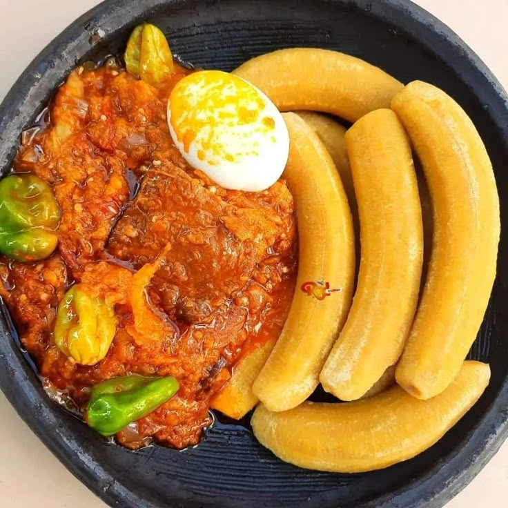

Plant-based
Plant-based
Pondu
Slow-cooked cassava leaves, deeply comforting.
The recipe collection
Five recipes. Five invitations to explore. Cook something familiar, try something new, and discover the story behind every dish.
Explore by region
Plant-based
Slow-cooked cassava leaves, deeply comforting.
 From the grill
From the grill
Fire, good goat meat, and very good company.
 From the grill
From the grill
Smoky goat skewers with a little pili pili heat.
 Comfort food
Comfort food
Fragrant spiced mince beneath golden custard.

Plant-basedTender cooking bananas meet groundnut sauce.
Our collection is still growing. Try another region, remove a filter, or search for an ingredient like “peanut” or “goat”.